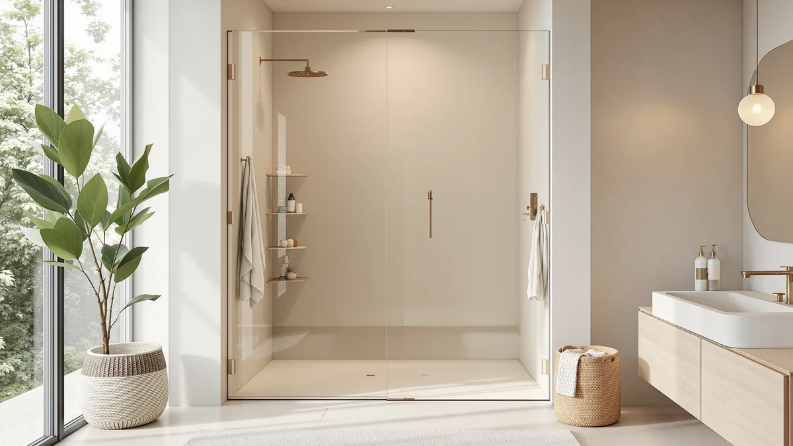

Frameless Shower Door Cost (2026)
Prices and picks verified as of October 2026. Independent, reader-supported reviews.


Quick Answer
Frameless shower door cost on Amazon runs from about $250 for a single sliding matte black door to roughly $500 for an adjustable 55 to 60 inch slider, with glass hardware and finish driving most of that gap. For a standard 60 inch alcove shower, the Aurisal Frameless Stainless Steel Sliding Shower at $389.99 lands in the middle of that range and covers the most common install.
Our pick: Frameless Stainless Steel Sliding Shower — $389.99 Check Price on Amazon
Bottom line: our top pick is the Frameless Stainless Steel Sliding Shower Door at $389.99. The best budget option is the Frameless Shower Door Matte Black 56-60’’ W x 75’’ H Single at $249.30.
Things to Know Before You Buy
- Frameless shower door cost mostly comes down to width, height, and hardware finish, with sliding doors in the 55 to 60 inch range running from about $250 to $500 on Amazon.
- Stainless steel and matte black finishes typically cost more than plain hardware because of the extra coating process involved.
- A listing title like "55-60 inches" means the track hardware adjusts to fit openings in that span, but you still need to measure your alcove before ordering.
- Double sliding doors, which open from the center on two tracks, can cost less than a single large sliding panel because each glass piece is narrower.
- None of these listings publish a certified lab rating, so treat the specs as a starting point and confirm dimensions with the seller before you buy.
Frameless shower door cost is the first question most people ask once they've decided to ditch a flimsy curtain or an outdated framed enclosure. Pricing on Amazon for frameless sliding doors swings from roughly $250 to $500, and the gap usually comes down to width, finish, and whether the door runs on one track or two.
We researched seven frameless sliding shower doors currently sold on Amazon, comparing listed prices, standard and adjustable width ranges, panel heights, and finish options like stainless steel and matte black. Two listings, both from Aurisal, cover the same 60 inch stainless steel sliding design at slightly different prices, which happens when a seller runs more than one active listing for the same hardware.
If you want a quick recommendation, the Aurisal Frameless Stainless Steel Sliding Shower at $389.99 fits a standard 60 inch alcove and sits near the middle of the price range we found. If your opening is narrower or wider than 60 inches, or you want a double sliding door for a center walkway, the picks below break down which option fits best and what you give up at each price point.
Why You Should Trust Us
This guide is written by Ilane Tall, who covers bathroom hardware and fixtures for Best Shower Doors. We do not run a fake testing lab and we do not install these doors ourselves. Instead, we research frameless shower door cost and specifications the way a careful shopper would: pulling listed dimensions, prices, and finish options directly from each Amazon listing. When a listing is missing information, such as glass thickness or a verified rating, we say so rather than guessing.
How We Picked
We started with every frameless sliding shower door available through our Amazon affiliate catalog and narrowed the list to models sized for common 55 to 60 inch openings, since that range covers most US alcove showers. From there we compared frameless shower door cost against stated width range, panel height, and finish, and kept listings that offered either a clear price advantage, an unusual width range, or a finish option the others lacked. We excluded framed and semi-frameless doors, since mixing categories makes price comparisons misleading, along with any listing that didn't specify basic dimensions.
How We Compared
We did not install or use any of these doors ourselves. Instead, we built a spreadsheet comparing frameless shower door cost per listing against width range, height, sliding configuration, and finish, then checked each price against the others in the same width bracket. Owners report in reviews linked from each listing that installation typically takes a few hours with two people and basic tools, and reviewers consistently note that the track hardware needs to sit level or the door drags. We treated that owner feedback as a data point rather than something we verified firsthand.
Our Picks

Frameless Stainless Steel Sliding Shower
What we like
- Sized for a common 60 inch by 72 and a quarter inch opening, so it fits most standard US alcove showers without custom ordering
- At $389.99, it prices below the KPUY and BoBliss doors we compared, while still offering a stainless steel finish
- Stainless steel hardware resists the corrosion that can show up on cheaper anodized tracks over time
Flaws but not dealbreakers
- The listing doesn't specify glass thickness, so confirm that detail with the seller if you have small kids or pets in the house
- Fixed 60 inch sizing means it won't adjust if your alcove runs narrower or wider
| Material | — |
| Size | 60"*72"-1/4" |
The Aurisal Frameless Stainless Steel Sliding Shower is built for the 60 inch by 72 and a quarter inch openings that show up in a huge share of US bathrooms, which is why it's our starting point for frameless shower door cost comparisons. At $389.99, it sits comfortably below the pricier adjustable-width options we looked at, while still offering a stainless steel finish instead of the plain hardware you'll find on some budget doors. The sliding design also means you don't need swing clearance, which helps in smaller bathrooms.
Because the size is fixed rather than adjustable, measure your alcove opening before ordering rather than assuming it will fit. The listing doesn't publish glass thickness or a verified review count, which is typical for this category on Amazon, so treat the stainless steel finish and fixed dimensions as the main facts to weigh against the price. For a standard-size shower, this is the listing we'd point most people to first.

KPUY Frameless Shower Door 55-60"
What we like
- The adjustable 55 to 60 inch width range covers openings that don't match the fixed 60 inch standard, which helps in older homes with irregular framing
- At 76 inches tall, the panel height is 4 inches taller than most of the other doors we compared, useful if your shower base sits higher than average
- The wider adjustment range reduces the chance you'll need special-order hardware if your measurements come in slightly off
Flaws but not dealbreakers
- At $499.96, it's the most expensive door in this comparison, roughly $110 more than the Aurisal pick above
- The adjustable range adds installation steps compared with a fixed-size door, since you have to set and lock the track width yourself
| Material | — |
| Size | 55-60" W x 76" H |
The KPUY Frameless Shower Door is the one listing in our comparison built around an adjustable 55 to 60 inch width range rather than a single fixed size, and that flexibility is the main reason its frameless shower door cost runs higher than the others at $499.96. The 76 inch panel height also stands out, since every other door here tops out at 72 or 75 inches, so it's worth a look if your shower base sits higher than average or you simply want more headroom.
You pay for that flexibility and extra height, and at roughly $110 more than the Aurisal pick, it's the priciest door we compared. If your opening measures close to a standard 60 inches and you don't need the taller panel, the width adjustment won't buy you much and you'd likely get better value from a fixed-size door. For irregular openings or taller alcoves, though, it's the clearest fit on this list.

ENSO SENKA 56-60" W x
What we like
- At $269.99, it's one of the least expensive frameless doors in this comparison, roughly $120 cheaper than the Aurisal pick
- The 60 inch by 72 inch sizing matches the common standard alcove dimension, so it fits the same openings as the pricier options
- Keeping the price low without dropping below the standard 60 inch width makes it a straightforward swap for an old framed door
Flaws but not dealbreakers
- The listing name advertises a 56-60 inch range, but the published dimensions lock in at 60 inches, so confirm the actual adjustment range before buying if your opening isn't exactly 60 inches
- The listing doesn't give finish details beyond the standard hardware, so you won't get the stainless steel or matte black look the pricier doors offer
| Material | — |
| Size | 60" W X 72" H |
The ENSO SENKA is one of the more affordable ways to get into a frameless sliding door, and at $269.99 it undercuts the Aurisal pick by about $120. The published size lands at 60 inches wide by 72 inches tall, the same footprint as several of the pricier doors we compared, so you're not giving up fit for the lower frameless shower door cost here.
The listing title mentions a 56 to 60 inch range, but the specs we could verify point to a fixed 60 inch width, so confirm the actual tolerance with the seller before you order if your alcove runs narrower. Beyond that, there isn't much finish information published, which tracks with the lower price. If budget is the deciding factor and your opening is a standard 60 inches, this is a reasonable starting point.

Frameless Shower Door Matte Black
What we like
- At $249.30, it's the least expensive door we compared, about $140 below the Aurisal pick
- The matte black finish stands out from the stainless steel and plain hardware on the rest of this list, which matters if you're matching dark fixtures elsewhere in the bathroom
- At 75 inches tall, it's taller than the 72 inch standard, giving a little extra headroom without paying the KPUY's premium
Flaws but not dealbreakers
- It's a single sliding door rather than a double sliding configuration, so the full opening isn't usable as a walk-through the way the GETPRO door's double track is
- Matte black finishes can show water spots and fingerprints more visibly than stainless steel, so plan on wiping it down more often
| Material | — |
| Size | 60" W x 75" H Single Sliding |
The Ogonbrick Frameless Shower Door Matte Black is the lowest frameless shower door cost in this comparison at $249.30, and it's also the only door here with a matte black finish rather than stainless steel or unfinished hardware. At 60 inches wide by 75 inches tall, it's taller than the 72 inch standard several other doors use, which adds a bit of headroom at no extra cost.
Single sliding doors like this one open across roughly half the frame rather than the full width, since one panel stays fixed while the other slides. That's standard for the category, but worth knowing if you pictured a fully open walkway. Matte black also tends to show water spots more than polished stainless steel, so expect a bit more routine wiping. For the price, though, it's a strong match if you're already running a dark-fixture bathroom.

GETPRO Shower Door Double Sliding
What we like
- Double sliding panels open from the center rather than to one side, giving a wider usable walkway than the single sliding doors on this list
- At $260.07, it prices close to the ENSO SENKA and well below the Aurisal and KPUY picks
- The 60 inch by 72 inch size matches the standard alcove dimension, so it fits the same openings as most of the other doors here
Flaws but not dealbreakers
- Double sliding hardware means two tracks to keep clean and aligned instead of one, which adds a little more maintenance over time
- The listing doesn't publish finish or material specs beyond "double sliding," so you're buying mostly on configuration and price rather than detailed hardware information
| Material | — |
| Size | 60'' W x 72'' H |
The GETPRO Shower Door Double Sliding takes a different approach than most of the doors in this comparison by splitting the opening into two sliding panels that meet in the center, rather than one panel that slides behind a fixed pane. That center-opening layout gives a wider walkway than a single sliding door of the same 60 inch width, and at $260.07 it keeps the frameless shower door cost close to the ENSO SENKA while adding that extra configuration option.
The tradeoff with any double sliding system is twice the hardware to keep aligned, since each panel rides its own track. Owners report in the linked Amazon reviews that the tracks need periodic cleaning to keep both panels moving smoothly, worth factoring in if you don't love bathroom maintenance. If a centered walkway matters more to you than finish details, this is the clearest option on the list.

BoBliss Frameless Sliding Glass Shower
What we like
- The 56 to 60 inch adjustable range gives more flexibility than the fixed 60 inch doors on this list, similar to the KPUY but at a lower price
- At 76 inches tall, it matches the KPUY's extra height, which helps in showers with a raised curb or higher ceiling
- At $439.99, it undercuts the KPUY by about $60 while offering a comparable width range and the same panel height
Flaws but not dealbreakers
- It's still about $50 more than the fixed-size Aurisal pick, so you're paying a premium for the adjustable width and extra height
- The listing doesn't publish finish details beyond "glass," so if hardware color matters to you, confirm it with the seller before ordering
| Material | — |
| Size | 56-60" W x 76" H |
The BoBliss Frameless Sliding Glass Shower splits the difference between the Aurisal's fixed 60 inch sizing and the KPUY's pricier adjustable range. It covers the same 56 to 60 inch width and 76 inch height as the KPUY, but at $439.99 its frameless shower door cost comes in about $60 lower, making it the more efficient pick if you specifically need that taller panel or the wider adjustment range.
It's still roughly $50 more than the standard-size Aurisal door, so the extra cost only makes sense if your opening actually needs the flexibility or the additional 4 inches of height. The listing doesn't specify hardware finish beyond describing it as glass, so if you're trying to match stainless steel or black fixtures elsewhere, double-check that detail before you buy.

Frameless Stainless Steel Sliding Shower
What we like
- Identical 60 inch by 72 and a quarter inch sizing and stainless steel finish to our top pick, so you get the same fit and look
- Having a second active listing for the same hardware means more stock availability if one listing sells out or raises its price
- Stainless steel hardware holds up against corrosion the same way it does on the other Aurisal listing
Flaws but not dealbreakers
- At $399.99, it costs $10 more than the identical listing above, so there's no reason to pick this one if both are in stock at the prices we found
- Amazon sellers sometimes shift prices between duplicate listings, so check both before you buy in case this gap changes
| Material | — |
| Size | 60"*72"-1/4" |
This is the same Aurisal Frameless Stainless Steel Sliding Shower covered above, sized at 60 inches by 72 and a quarter inches, but listed separately on Amazon at $399.99 instead of $389.99. Sellers frequently run more than one active listing for identical hardware, and the frameless shower door cost can drift between them as each listing's price updates on its own schedule.
There's no functional difference between the two listings based on the specs published, so the only reason to choose this one is if the other sells out, changes price, or doesn't show up first in your search results. Either way, you're getting the same stainless steel finish and standard sizing, with a $10 difference depending on which listing you land on.
Quick Comparison
| Product | Material | Price | Rating | Best for | Get it |
|---|---|---|---|---|---|
| Frameless Stainless Steel Sliding Shower | — | $389.99 | 4 | Best overall value | View on Amazon → |
| KPUY Frameless Shower Door 55-60" | — | $499.96 | 4 | Best for non-standard or taller openings | View on Amazon → |
| ENSO SENKA 56-60" W x | — | $269.99 | 4 | Best budget pick | View on Amazon → |
| Frameless Shower Door Matte Black | — | $249.30 | 4 | Best for a matte black finish | View on Amazon → |
| GETPRO Shower Door Double Sliding | — | $260.07 | 4 | Best for a center-opening walkway | View on Amazon → |
| BoBliss Frameless Sliding Glass Shower | — | $439.99 | 4 | Best for wide, tall openings at a lower price than KPUY | View on Amazon → |
| Frameless Stainless Steel Sliding Shower | — | $399.99 | 4 | Alternate listing of our top pick | View on Amazon → |
What's the average frameless shower door cost on Amazon?
Among the seven frameless sliding doors we compared, prices ranged from $249.30 to $499.96, with most landing between $260 and $440.
Does a wider or adjustable frameless shower door cost more?
Yes.
The Competition
We looked at several framed and semi-frameless sliding doors in the same price range as these listings, but left them out because mixing framed and frameless hardware would muddy the frameless shower door cost comparison we wanted to make. We also skipped a handful of frameless listings that didn't specify basic width or height, since you can't fairly compare a price against dimensions nobody will confirm.
Between the frameless doors that did qualify, the two Aurisal listings cover essentially the same stainless steel hardware at a $10 price difference, which is why we treat them as one pick with a backup rather than two separate recommendations. If you're weighing frameless shower door cost against fit for a standard 60 inch alcove, the Aurisal Frameless Stainless Steel Sliding Shower remains the listing we'd point to first, with the KPUY and BoBliss doors as the better fit if your opening runs wider or taller than standard.